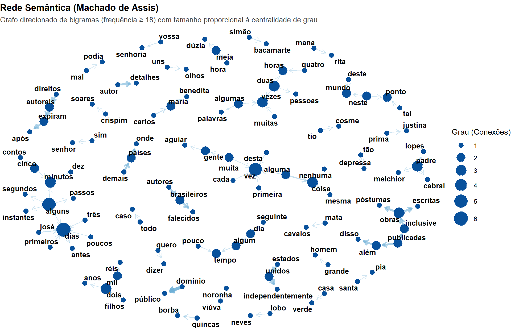

Leis de Potência, testes de hipótese vocabular (Keyness), Análise de Correspondência, LDA e Redes Semânticas
Nível Pós-Graduação (Mestrado & Doutorado): Esta seção avança da estatística descritiva para a modelagem inferencial e multivariada, testando formalmente hipóteses estilométricas, leis empíricas de distribuição vocabular, redução de dimensionalidade, tópicos latentes bayesianos (LDA) e topologia de redes semânticas.
1. Leis Empíricas da Linguística Quantitativa (Lei de Zipf)
A Lei de Zipf postula que, em qualquer corpus natural suficientemente extenso, a frequência \(f(r)\) de uma palavra é inversamente proporcional ao seu posto \(r\) na tabela de frequências ordenadas:
Aplicando uma regressão linear ordinária (OLS) sobre os logaritmos da frequência e do posto (rank) no conjunto integral das 7 obras, estimamos o expoente empírico \(\alpha\) do léxico machadiano:
Ver código R
freq_zipf <- df_livros %>%unnest_tokens(word, text) %>%filter(!str_detect(word, "^[0-9]+$")) %>%count(word, sort =TRUE) %>%mutate(rank =row_number(),freq_rel = n /sum(n) )# Regressão linear na faixa central da distribuição (ranks 10 a 5000) para evitar distorção nas caudasmodelo_zipf <-lm(log10(freq_rel) ~log10(rank), data =filter(freq_zipf, rank >=10, rank <=5000))alpha_est <-round(-coef(modelo_zipf)[2], 3)r2_est <-round(summary(modelo_zipf)$r.squared, 4)ggplot(freq_zipf, aes(x = rank, y = freq_rel)) +geom_line(color ="#2171b5", linewidth =1) +geom_abline(intercept =coef(modelo_zipf)[1],slope =coef(modelo_zipf)[2],linetype ="dashed", color ="#d95f02", linewidth =0.9 ) +scale_x_log10(labels = scales::comma) +scale_y_log10(labels = scales::scientific) +annotate("text", x =80, y =0.015,label =paste0("Expoente estimado: α = ", alpha_est, "\nR² = ", r2_est),hjust =0, fontface ="bold", color ="#d95f02", size =4 ) +labs(title ="Distribuição Empírica de Frequências (Lei de Zipf)",subtitle ="Escala log-log com ajuste linear tracejado (ranks 10 a 5.000)",x ="Posto no Ranking Vocabular (log10)",y ="Frequência Relativa (log10)" )
Figura 1: Ajuste log-log da Lei de Zipf sobre o vocabulário integral das 7 obras de Machado de Assis.
2. Análise de Keyness (\(\chi^2\))
Para testar se a transição estética entre a Fase Romântica (Helena, 1876) e a Fase Realista (1881–1908) produz alterações estatisticamente significativas no vocabulário, aplicamos o teste de qui-quadrado (\(\chi^2\)) de Keyness com correção de Yates, comparando as frequências observadas contra as esperadas sob a hipótese nula de homogeneidade lexical:
Ver código R
df_fases <- df_livros %>%group_by(fase) %>%summarise(text =paste(text, collapse =" "), .groups ="drop")corp_fases <-corpus(df_fases$text, docnames = df_fases$fase)dfm_fases <-tokens(corp_fases, remove_punct =TRUE, remove_numbers =TRUE, remove_symbols =TRUE) %>%tokens_tolower() %>%tokens_remove(c(stopwords("portuguese"), sw_extra)) %>%dfm()# Grupo alvo: Fase Romântica (Helena) vs Referência: Fase Realistaresultado_keyness <-textstat_keyness(dfm_fases, target ="Fase Romântica", measure ="chi2")textplot_keyness(resultado_keyness, n =15, color =c("#d95f02", "#1b9e77")) +labs(title ="Teste de Hipótese Vocabular (Keyness χ²): Romantismo vs. Realismo",subtitle ="Termos com maior desvio significativo entre Helena (alvo) e os romances realistas (referência)",x ="Estatística Qui-Quadrado (χ²)" )
Figura 2: Estatística Qui-Quadrado (χ²) dos termos significativamente associados à Fase Romântica vs. Fase Realista.
3. Análise de Correspondência (CA)
A Análise de Correspondência (CA) decompõe a tabela de contingência Documento-Termo via Decomposição em Valores Singulares (SVD), projetando os 7 livros em um espaço euclidiano bidimensional de menor variância perdida. Diferente do dendrograma, a CA revela eixos contínuos de proximidade estilística:
Ver código R
df_corpus_agregado <- df_livros %>%group_by(book_short, fase) %>%summarise(text =paste(text, collapse =" "), .groups ="drop")corp_obras <-corpus(df_corpus_agregado$text, docnames = df_corpus_agregado$book_short)docvars(corp_obras, "fase") <- df_corpus_agregado$fase# Filtra termos que aparecem em pelo menos 3 obras e no mínimo 40 vezes (estilometria robusta)dfm_ca <-tokens(corp_obras, remove_punct =TRUE, remove_numbers =TRUE, remove_symbols =TRUE) %>%tokens_tolower() %>%tokens_remove(c(stopwords("portuguese"), sw_extra)) %>%dfm() %>%dfm_trim(min_termfreq =40, min_docfreq =3)# Decomposição via Matriz de Perfis Relativos (Correspondência Simples)P <-as.matrix(dfm_ca) /sum(dfm_ca)r <-rowSums(P)c_mass <-colSums(P)S <-diag(1/sqrt(r)) %*% (P - r %o% c_mass) %*%diag(1/sqrt(c_mass))svd_res <-svd(S)inercia <-round((svd_res$d^2/sum(svd_res$d^2)) *100, 1)coord_docs <-diag(1/sqrt(r)) %*% svd_res$u[, 1:2] %*%diag(svd_res$d[1:2])df_ca_plot <-tibble(Livro =docnames(dfm_ca),Fase =docvars(corp_obras, "fase"),Dim1 = coord_docs[, 1],Dim2 = coord_docs[, 2])ggplot(df_ca_plot, aes(x = Dim1, y = Dim2, color = Fase, label = Livro)) +geom_hline(yintercept =0, linetype ="dashed", color ="gray60") +geom_vline(xintercept =0, linetype ="dashed", color ="gray60") +geom_point(size =4) + ggrepel::geom_text_repel(size =4, fontface ="bold", box.padding =0.5) +scale_color_manual(values =c("Fase Romântica"="#d95f02", "Fase Realista"="#1b9e77")) +labs(title ="Mapa de Correspondência",subtitle ="Projeção das distâncias qui-quadrado entre as obras nos dois primeiros eixos latentes",x =paste0("Dimensão 1 (", inercia[1], "% da inércia)"),y =paste0("Dimensão 2 (", inercia[2], "% da inércia)") )
Figura 3: Projeção bidimensional dos 7 livros via Análise de Correspondência sobre termos recorrentes.
4. Modelagem Probabilística de Tópicos (LDA)
Utilizando a Alocação Latente de Dirichlet (LDA) sobre a matriz dos 827 capítulos, estimamos \(K = 4\) tópicos latentes via amostragem de Gibbs (topicmodels), identificando os vocábulos de maior probabilidade condicional \(\beta = P(\text{palavra} \mid \text{tópico})\) e a distribuição média \(\gamma\) de cada tópico por romance:
Ver código R
if (requireNamespace("topicmodels", quietly =TRUE)) {library(topicmodels) df_caps <- df_livros %>%mutate(doc_id =paste(book_short, chapter_name, sep =" :: ")) %>%group_by(doc_id, book_short) %>%summarise(text =paste(text, collapse =" "), .groups ="drop") dfm_caps <-corpus(df_caps$text, docnames = df_caps$doc_id) %>%tokens(remove_punct =TRUE, remove_numbers =TRUE, remove_symbols =TRUE) %>%tokens_tolower() %>%tokens_remove(c(stopwords("portuguese"), sw_extra)) %>%dfm() %>%dfm_trim(min_termfreq =15, min_docfreq =5)# Remove capítulos vazios após trim dfm_caps <-dfm_subset(dfm_caps, ntoken(dfm_caps) >0) dtm_lda <-convert(dfm_caps, to ="topicmodels")set.seed(2026) modelo_lda <-LDA(dtm_lda, k =4, method ="Gibbs", control =list(iter =500, burnin =100)) topicos_beta <-tidy(modelo_lda, matrix ="beta") %>%group_by(topic) %>%slice_max(beta, n =8, with_ties =FALSE) %>%ungroup() %>%mutate(topic_label =paste("Tópico Latente", topic))ggplot(topicos_beta, aes(x =reorder_within(term, beta, topic_label), y = beta, fill = topic_label)) +geom_col(show.legend =FALSE) +facet_wrap(~ topic_label, scales ="free", ncol =4) +coord_flip() +scale_x_reordered() +labs(title ="Decomposição Temática Não Supervisionada (Modelo LDA, K = 4)",subtitle ="Termos com maior probabilidade de geração (β) dentro de cada tópico latente",x =NULL, y ="Probabilidade Condicional (β)" ) +theme(strip.text =element_text(face ="bold"))} else {cat("")}
5. Teoria dos Grafos
Para modelar a estrutura relacional do vocabulário, construímos uma rede de coocorrência a partir dos bigramas mais frequentes, calculando a Centralidade de Grau (Degree) para identificar os núcleos articuladores do discurso machadiano:
Ver código R
if (requireNamespace("igraph", quietly =TRUE) &&requireNamespace("ggraph", quietly =TRUE)) {library(igraph)library(ggraph) arestas_rede <- df_livros %>%unnest_tokens(bigrama, text, token ="ngrams", n =2) %>%filter(!is.na(bigrama)) %>%separate(bigrama, c("from", "to"), sep =" ") %>%filter(!from %in%c(stopwords("portuguese"), sw_extra),!to %in%c(stopwords("portuguese"), sw_extra),nchar(from) >2, nchar(to) >2 ) %>%count(from, to, sort =TRUE) %>%filter(n >=18) grafo <-graph_from_data_frame(arestas_rede, directed =TRUE)V(grafo)$grau <-degree(grafo, mode ="all")set.seed(2026)ggraph(grafo, layout ="fr") +geom_edge_link(aes(edge_alpha = n, edge_width = n), edge_colour ="#6baed6",arrow =arrow(length =unit(2.5, "mm")), end_cap =circle(3, "mm")) +geom_node_point(aes(size = grau), color ="#08519c") +geom_node_text(aes(label = name), repel =TRUE, size =3.5, fontface ="bold") +scale_edge_width(range =c(0.4, 2.2), guide ="none") +scale_edge_alpha(range =c(0.3, 0.85), guide ="none") +scale_size(range =c(3, 9), name ="Grau (Conexões)") +labs(title ="Rede Semântica (Machado de Assis)",subtitle ="Grafo direcionado de bigramas (frequência ≥ 18) com tamanho proporcional à centralidade de grau" ) +theme_void() +theme(plot.title =element_text(face ="bold", size =13),plot.subtitle =element_text(size =10, color ="gray30"))} else {cat("Instale os pacotes 'igraph' e 'ggraph' para visualizar o grafo de coocorrência.")}

Figura 4: Grafo de coocorrência lexical entre termos consecutivos (frequência >= 18) nos 7 livros.